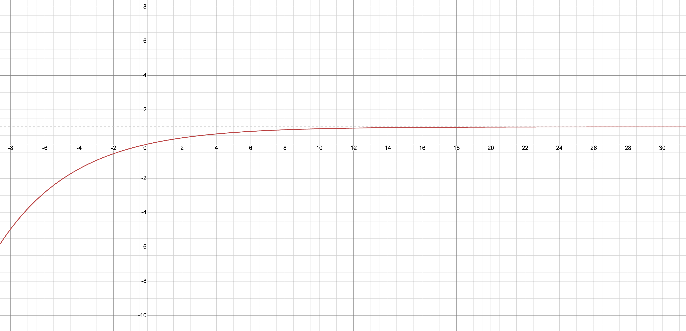

Pregnancy Probability Starring Andrew Huberman
Fertility Crisis
Is there a fertility crisis? Bryan Caplan suggests to have more kids and recently posted The Fertile Formula, an idea to reduce federal taxes based on how many kids you have, getting to income tax-free for life after six kids. Great deal!
Andrew Huberman Calculates Pregnancy Probability
If you were guaranteed a pregnancy after five attempts, it would be an even better deal! Which is what Andrew Huberman was implying while discussing pregnancy probabilities in a recent video:
Andrew Huberman says that having sex 6 times gives you a 120% chance of getting pregnant
— BuccoCapital Bloke (@buccocapital) May 9, 2024
Multiply that by his 6 girlfriends and we have a 120% chance of having 36 Hubermans after 6 years
Population crisis solved https://t.co/m1u5qgmwUJ
He was specifically talking about cumulative probabilities and he said that if the \(\Pr(\text{Pregnancy}) = 0.2\) per attempt, then the \(\Pr(\text{Pregnancy})\) after \(6\) attempts is \(1.2\), i.e. \(120\%\).
In other words, he did this:
\[ \begin{equation} \begin{split} \Pr(\text{Preg after 6 attempts}) &= 6 * \Pr(\text{Preg after 1 attempt}) \\ &= 6 * 0.2 \\ &= 1.2 \\ &= 120\% \end{split} \end{equation} \]
Huberman Calculation Issues
There are many issues here. To start, since probabilities are by definition between \(0\) and \(1\), he clearly made an error. \(10\) pregnancy attempts by his logic would make you \(200\%\) likely to be pregnant, which doesn’t really make too much sense.
Huberman was adding \(20\%\) for each attempt, which is not the correct approach. In this post, we’ll explain how the actual theory works.
I made a visualization for you all. https://t.co/LMTECq70HZ pic.twitter.com/IGIL1HyGQl
— Matthew B Jané (@MatthewBJane) May 10, 2024
Huberman Correction
He since posted a Twitter correction and has updated the original videos.
Correctly Calculating Pregnancy Probabilities
We’re not here to critique an error, but rather to LEARN PROBABILITY! So how DO you calculate this probability?
For a single attempt, we use the Huberman assumption that \(\Pr(\text{Pregnancy}) = 0.2\). We’ll define this as \(p = 0.2\).
We also then know that \(\Pr(\text{No Pregnancy}) = 1 - p = 1 - 0.2 = 0.8\).
6 Pregnancy Attempts
So after \(6\) attempts, we can say that the \(\Pr(\text{Preg after 6 attempts})\) is equal to the inverse of the probability of not getting pregnant \(6\) times in a row. Why? The probability of an event and its complement always sum to \(1\). For example, if it’s \(70\%\) to be sunny tomorrow, then it’s \(30\%\) to be not-sunny.
Mathematically, we can write:
\[ \begin{equation} \begin{split} \Pr(\text{Preg after 6 attempts}) &= 1 - \Pr(\text{Not Preg after 6 attempts}) \\ &= 1 - (0.8)^6 \\ &= 0.738 \\ &= 73.8\% \end{split} \end{equation} \]
Independent Probabilities
Why is it \(1 - (0.8)^6\)? This is because when we are calculating probabilities involving independent events, they are multiplied. Each case of not becoming pregnant has an independent probability of \(0.8\) (note that this is a simplification because probabilities would generally vary for each attempt). Multiplying this \(6\) times gets us the probability of not being pregnant after \(6\) attempts. So to get the probability of being pregnant after \(6\) attempts, we take \(1\) minus this, therefore getting \(1 - (0.8)^6\).
x Pregnancy Attempts
More generally, after \(x\) attempts, we can say:
\[ \begin{equation} \begin{split} \Pr(\text{Preg after x attempts}) &= 1 - \Pr(\text{Not Preg after x attempts}) \\ &= 1 - (1-0.2)^x \\ &= 1 - (0.8)^x \end{split} \end{equation} \]
99% Likelihood of Pregnancy
So assuming that \(\Pr(\text{Pregnancy}) = 0.2\), when are you \(99\%\) to be pregnant?
\[ \begin{equation} \begin{split} 0.99 &= 1 - \Pr(\text{Not Preg after x attempts}) && \Rightarrow \text{ Set pregnancy likelihood to } 0.99 \\ &= 1 - (0.8)^x && \Rightarrow \text{ Use equation from above } \\ 0.99 + (0.8)^x &= 1 && \Rightarrow \text{ Add } 0.8^x \text{ to both sides} \\ (0.8)^x &= 0.01 && \Rightarrow \text{ Subtract } 0.99 \text{ from both sides} \\ x &= 20.64 && \Rightarrow \text{ Use calculator to solve} \end{split} \end{equation} \]
Therefore after \(21\) pregnancy attempts where each attempt has a \(20\%\) likelihood, your cumulative likelihood of being pregant exceeds \(99\%\). (We round up from \(20.64\) because each one is discrete and at \(20\) the probability would be under \(99\%\), so only after \(20.64\) does it exceed \(99\%\), which means it exceeds at attempt \(21\).)
We can see this on the graph below where \(\Pr(\text{Pregnancy}) = 0.2\). The x-axis is the number of attempts and the y-axis is the cumulative (overall) probability of pregnancy after that many attempts. Note that the graph approaches, but will never exceed the probability of \(1\).

Generalized Pregnancy Equation
Finally, even more generally, we can say that after $ x $ attempts and the more general \(\Pr(\text{Pregnancy}) = p\) (i.e. using probability \(p\) instead of \(0.2\)):
\[ \begin{equation} \begin{split} \Pr(\text{Preg after x attempts}) &= 1 - \Pr(\text{Not Preg after x attempts}) \\ &= 1 - (1-p)^x \\ \end{split} \end{equation} \]